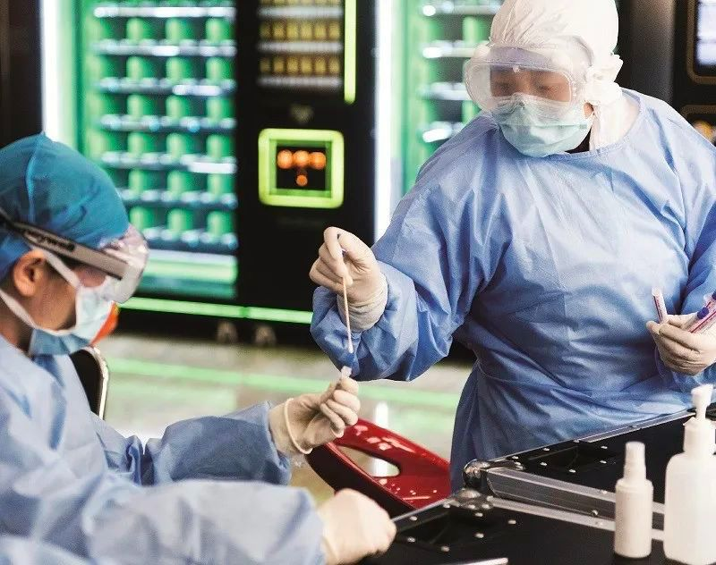

独家|石正丽回应质疑 专家一致认为新冠病毒非人造
原文链接 备份链接 【财新网】（记者 杨睿 冯禹丁 赵今朝）“阴谋论者不相信科学。我希望国家专业部门来调查，给我们一个清白。”中国科学院武汉病毒研究所研究员石正丽2月4日回复财新记者称，“我自己的话没有说服力，我不能控制别人的思想和言 …
国内本就数量缺乏、基础薄弱的P3实验室，只有十几家获批进行新冠病毒实验，且各自为战，缺乏信息共享
本文 5233字，阅读全文约9分钟

文 | 《财经》记者 孙爱民 赵天宇 编辑 | 王小
2020年3月12日，美国新墨西哥大学的三级生物安全防护（P3）实验室收到新冠病毒的样本，研究人员终于启动病毒培养。
新冠病毒的侵入机制、变异追踪、传染病研究，以及疫苗研发、药物筛选等，都依赖于生物安全防护实验室。根据微生物及其毒素的危害程度不同，生物安全防护实验室分四个等级，如新冠病毒，要在高级别的P3实验室，或四级实验室（P4实验室）中进行。
3月初，顶级大学云集的波士顿召开了一场长达4个多小时的研讨会，80多名来自哈佛医学院、波士顿儿童医院、麻省理工学院、波士顿大学的研究者与会，并达成一项共识：对于科学家来说，首要任务是搞清楚病毒是如何攻击细胞、促发感染的，这些是研发疫苗与药物的基础。
科学界对病毒的深入研究才刚刚起了一个头，几乎所有跟病毒相关的研究团队，都摩拳擦掌。与会的波士顿大学医学院副教萨伊徳（Mohsan Saeed）告诉《财经》记者，他所在的P3实验室，正在进行疫苗研发、抗病毒药物研发和疾病传播研究三项研究。
全球最大的疫苗生产商印度血清研究所，目前正与一家美国公司合作研发疫苗。该公司有关负责人接受《财经》记者采访时表示，预估疫苗到2022年才能上市，“最大的问题是P3实验室太少”。印度目前共有12家P3实验室。
《财经》记者根据公开资料不完全统计，中国大陆目前共有1个P4实验室，即武汉P4病毒实验室；另有68个P3实验室，其中55个为细胞研究实验室（BSL-3），13个为感染动物实验室（ABSL-3）。
据公开报道，除了武汉P4实验室外，国内只有约10家P3实验室获准进行新冠病毒的实验活动。而这些P3实验室，大多开局不利。
新冠病毒的基础研究至少还需要半年，甚至几年的时间，才可能有成果，加之P3实验室数量有限，使未来出成果的概率大大降低，也影响了近期疫苗、药物研发和筛选进度。
难迈第二步
大多数获批P3实验室已完成第一步，分离病毒毒株；后续的研究，才能彰显各团队实力。然而，“仍没有实质性进展。”多家获准开展实验活动的P3实验室负责人接受《财经》记者采访时说。
1月下旬，处于新冠肺炎疫情中心区域的湖北省疾控中心P3实验室，已完成了病毒的分离鉴定。
“我们是第一个获国家卫健委批准，进行活病毒实验活动的P3实验室，事发紧急，与武汉P4病毒实验室打了前站。”湖北省疾控中心P3实验室相关负责人告诉《财经》记者。
在1月底，又有9家P3实验室相继获批开展病毒实验活动。10家中，有7家隶属于省级疾控中心，目前绝大多数已经完成了病毒毒株的分离工作。
广东省疾控中心于1月26日获国家卫健委的资质批复后，第二天便从一例病人的肺泡灌洗液中分离到一株新型冠状病毒；上海市疾控中心，仅用了48小时就从4份鼻咽拭子标本中分离到了4株新型冠状病毒高滴度的病毒株。
浙江省疾控中心是获得毒株最多的，截至2月25日，已经分离获得15株新冠病毒毒株，并完成了毒株的鉴定。
病毒毒株，相当于“种子库”，“将用于病毒溯源、疫苗研制、检测试剂开发、抗病毒药物筛选、消毒灭菌效果评估等研究领域，为疫情防控提供科学依据。”复旦大学P3实验室研发负责人谢幼华说。
在对外发布已分离毒株的消息后，各实验室便进入了“安静期”。沿海地区一家P3实验室的负责人直言，“没有什么特别的进展。”
安徽省疾控中心P3实验室一名研究人员也告诉《财经》记者，“获得毒株后，启动病毒结构的研究，同时进行药物筛选。但没有特别实质性的进展，对病毒入侵机制、变异的跟踪还在进行中。”
病毒的入侵机制，是多家P3实验室豪言要攻克的目标，这项工作一旦明朗，将为设计药物、抗体或疫苗，以及疫情防控工作直接带来效益。此前，中科院武汉病毒所的研究人员，已经发现新型冠状病毒入侵时的细胞受体，与SARS病毒的受体一样，都是ACE2。
新冠病毒的变异跟踪，是通过比对不同时期、地方的病毒基因组序列，找出突变位点，来判断病毒变异的速度。“变异的位点，对于病毒的传播有什么功能，需要多项实验来探究。”上述沿海地区P3实验室一名研究人员分析，实验中首先需要将新冠病毒引入细胞，“病毒太大了，这项初始工作就很难”。
美国威斯康星大学兽医学院教授Thomas Friedrich也证实这一说法，新冠病毒的基因序列太大，拥有约3万个核苷酸，是流感病毒与HIV病毒的三倍，“在实验室中操控、改变病毒的基因时，很难操作”。他对《财经》记者说。
沿海地区某P3实验室有十余年的历史，研究过SARS病毒、MERS病毒等，尚且难以开启第二阶段的研究工作，对于其他7家省级疾控中心所属的P3实验室，更是难上加难。
山东省疾控中心病毒病所一名研究人员告诉《财经》记者，新冠病毒的研究，没有现成的经验可以借鉴，只有17年前SARS的一些资料可以参考，“实验所需的细胞系库存不足，研究团队缺乏挑大梁的，整个团队过于年轻化，有的对实验的技术方法都不熟悉”。
复旦大学官网称，该校基础医学院教授应天雷等团队，首次发现SARS病毒特异性人类单克隆抗体CR3022，可以与新冠病毒有效结合。CR3022或可用于预防和治疗新冠病毒感染。
“这项研究目前还在初步阶段。”3月6日，应天雷告诉《财经》记者。
获批的实验室太少
一款药或疫苗的研发，前期要先完成细胞实验和动物实验，目前新冠病毒的这些实验，都只能在获得批准的P3、P4实验室中进行。
“能做细胞实验的机构太少，如果把现在筛选出来的有希望的药物分子全做完，要排一个长长的队伍。”晶泰科技首席科学家张佩宇对《财经》记者分析，非疫情时期，药企会通过CRO（提供药物研发外包服务）公司，或者直接付钱给疾控中心或医院进行生化实验，然后再找P3实验室进行细胞、动物实验。“现在情况紧急，CRO公司没有资质，而P3实验室的实验资源都是饱和的，给钱也不会做，更多是以合作的形式开展。”
事实上，即便所有有资质的P3实验室全部开放,面对疫情之下的核酸检测、实验，都是“僧多粥少”。
没有实验室接活，这让很多研究团队“英雄无用武之地”。
多数研发药企，不得不在P3实验室外排队等做细胞实验；同时，自己购买蛋白，进行生化实验，以尽量缩短整个的实验时间。
“生化实验时间会很快，它不涉及到传染性，而且不涉及到病毒毒株。”张佩宇预估四五月时，下一步的细胞实验资源可能会相对充足，“但那时候新冠肺炎疫情会是什么情况，不好说”。
掌握国内P3实验室名单的，是中国合格评定国家认可委员会（CNAS），其办公室负责人接受《财经》记者采访时，并未透露国内的P3实验室数量。但该机构2月29日发布的通报显示，“截至目前，共认可生物安全实验室90家”。
国务院下发的《病原微生物实验室生物安全管理条例》规定：“三级、四级实验室应当通过实验室国家认可。”照此规定，结合CNAS的通报，除去1个P4实验室外，中国应有89个P3实验室。
这一数字，与欧美国家相比，望尘莫及。美国国家科学院下属的“全国研究理事会”，在一份报告中提及“在美国，没有机构追踪到底有多少家P3实验室”。中国的一份研究显示：美国在2011年时，便已经拥有1495个P3实验室；国际上已经公布的P4实验室约有50个，其中12个在美国。
美国对外关系委员会全球卫生高级研究员Laurie Garrett曾表示：“美国的P3与P4实验室大量涌现，是国家研究水平的标志。”
在法国，P3实验室是大学和医疗机构的标配。“法国每个大型的公立医院、医科大学、研究机构，都有P3实验室。”上海交通大学副校长、医学院院长陈国强院士告诉《财经》记者，上海交大医学院至今没有获批建立P3实验室，“在很多领域，我们可以与法国同行平等交流，但在感染领域的差距非常显著”。
给新人一点空隙
病毒致病机理的研究，周期长、需要的资源多。等研究出来时，也许疫情已过、不再是热点，很多研究者在选择课题时望而却步。
“现在发出来的涉及到病毒感染实验室的新冠病毒文章，基本都由重点实验室主任、所长、P3实验室主任作为共同通讯作者，这些上游资源被严重把持，不利于年轻科学家及领军人才的培养。”一名在国外多年从事病毒研究的海归青年科学家告诉《财经》记者。
提及P3实验室，该海归科学家表示：中国现有的P3实验室大多规模太小，在疫情期间很难对外开放，有时还成为各个科研团队据为己有的优势。
“大家都扑上去做简单的、发文章快的项目，以便在竞争中脱颖而出，有意无意间限制了合作。”上述海归科学家说。
美国数量可观的实验室，给新冠病毒的基础研究，带来更大突破的可能。“我们与NIH（美国国立卫生研究院）合作，将在NIH的P4实验室中进行病毒实验。”美国威斯康星大学医学与公共卫生学院教授康纳（David O’Connor）告诉《财经》记者。
康纳团队的研究兴趣，在于新冠病毒进入人体、血液的方式，人体免疫系统如何反应，寻找一些可以显示感染人群的标记物，“我们希望未来几周内，可以建立猴子模型，一旦有了成果便会发表出来”。
康纳不知道美国有多少P3实验室正在进行新冠病毒实验，他的研究团队在P4实验室中进行病毒实验，不需要相关部门的批准与许可，“不少实验室已经在进行病毒培养了”。
他认为，针对活体动物中的病毒研究，非P3实验室同样可以进行病毒与细胞的研究。
美国疾控中心（CDC）只是在官网发布的指南中注明：“病毒分离、病毒培养，以及其他对于新冠病毒的研究，目前不建议进行，除非是在P3实验室中。”
适度开放利于病毒研究
疫情之初，对新冠病毒的实验，国内曾一度限制。1月3日，国家卫健委办公厅，发布了《关于在重大突发传染病防控工作中加强生物样本资源及相关科研活动管理工作的通知》（下称“三号文”），规定：“病原相关实验活动应当在具备相应防护级别的生物安全实验室开展”“未经批准，不得擅自向其他机构和个人提供生物样本及其相关信息。”
“三号文虽然要求实验活动必须在生物安全实验室里开展，但没明确说明是几级实验室。”华东一家P3实验室研究人员对《财经》记者说，他所在的实验室直到1月11日才收到这份通知，“所有计划的、已经开展的实验活动戛然而止”。
1月23日，国家卫健委在官网公布的《新型冠状病毒实验室生物安全指南（第二版）》，明确病毒培养、动物感染实验应当在P3实验室操作，并报经国家卫健委批准，取得开展相应活动的资质。
此前一天（1月22日），CNAS紧急发布了一份应急方案，并开设绿色通道，对P3实验室提供新冠病毒实验活动的紧急扩项，采取文件评审方式对所递交材料进行审核，并视频连线考核实验室工作人员。
CNAS发布应急方案的当天，上海一个P3实验室立即提交了扩项申请材料，并在两天后获批——新冠病毒实验资格。此前，该实验室已经通过了CNAS年检。
可在向国家卫健委申请新冠病毒的实验资质时，该实验室得到了不予受理的回复。一名知情人士告诉《财经》记者，这家实验室1月12日收到当地卫健委要求整改的口头通知，在经过整改后，已经申请得到了进行新冠病毒相关临床检测的许可，“现在是需要科学研究有生力量尽出的特殊时期”。
一名接近生物安全国家科学咨询委员会的科学家，曾经在接受外媒采访时说，美国接受政府资助的生物安全实验室，需要遵守CDC的指南，“如果违反了，CDC会断掉资助，但不会被关停”。
中国P3实验室的整体状况让不少研究者担忧。陈国强等研究人员在《中国科学》期刊发表文章认为，疫情中，“因为实验室配置问题，多数处于英雄无用武之地的局面，严重制约了疫情暴发后科研技术攻关的应变能力”，中国的P3实验室“规模和对外交流合作共享的范围都极为有限,远远无法满足科研需要。”
在陈国强看来，国内大量医疗与研究资源专注于慢性病，在传染病研究上投入过少，也导致P3实验室不仅数量少，而且多数缺乏高水平的研究设施、研究人员和技术贮备。在SARS之后设立了重大传染病专项，但依然没有引起足够重视。
“就像不能因为长期没有打仗而放弃国防建设一样，我们不能因为长时间没有突发传染病的发生而轻视研究和投入。”陈国强告诉《财经》记者，“不能因为P3实验室可能存在的安全风险，而以最简单的‘不批准’置其于尴尬之地。”
在美国，不少研究力量正在“抱团”。2月24日，哈佛大学宣布联合钟南山院士及广州呼研院团队共同探索开发新的诊疗方案，中国恒大集团将在未来五年为该项目提供1.15亿美元科研经费支持，众多波士顿的医疗机构和生物科技公司皆参与其中。
美国哥伦比亚大学组建了一支由病毒学家、分子生物学家、化学家等多种专业人员组成的科研团队，采用四种方法来开发药物，由世界著名艾滋病学家、亚伦·戴蒙德艾滋病研究中心发起人何大一领衔。马云公益基金会宣布向该项目捐赠1亿元人民币，项目组也将与浙江大学医学院附属第一医院开展合作。
被誉为“世界上最知名的病毒猎手”的哥伦比亚大学教授W.Ian Lipkin，其所在的研究机构，已经得到了NIH提供的活体病毒样本，即将在P3实验室中进行相关的研究。
“美国的P3实验室能得到NIH分享的病毒样本，我们还在各自为战。”上述沿海P3实验室负责人说，P3实验室的整体繁荣，需要整体科研人员水平的提升，更需要开放的学术氛围和管理制度，这也是科学的本质。
早在2016年，中科院武汉病毒研究所等四家机构的科研人员在《中国科学院院刊》上呼吁：建立国家生物安全创新中心，使之成为资源和信息共享中心、信息发布平台。在新冠肺炎疫情下，此条建议应引起各方的重视和研讨。
【版权声明】本作品著作权归《财经》独家所有，授权深圳市腾讯计算机系统有限公司独家享有信息网络传播权，任何第三方未经授权，不得转载。

系列报道
◤活粒为《财经》杂志 科技与健康团队 的新媒体项目，坚持独立、独家、独到，合作／爆料请联系：yingxin@caijing.com.cn◢

《财经》旗下健康领域深度报道专栏
扫一扫：

原文链接 备份链接 【财新网】（记者 杨睿 冯禹丁 赵今朝）“阴谋论者不相信科学。我希望国家专业部门来调查，给我们一个清白。”中国科学院武汉病毒研究所研究员石正丽2月4日回复财新记者称，“我自己的话没有说服力，我不能控制别人的思想和言 …
原文链接 备份链接 [* 童兰 ](/author/100001342.html) 第一财经记者从中国科学院武汉病毒研究所了解到，研究所正在地方卫生管理部门的指挥下做相关病原检测方面工作，预计很快会有检测结果。 针对武汉不明原因肺 …
原文链接 备份链接 【财新网】（实习记者 黄晏浩 记者 徐路易）新冠病毒又一项“特殊性”在自然界中找到了类似物。3月6日，一篇发表在bioRxiv预印本网站的论文称，S蛋白两个亚基S1和S2间的蛋白酶切位点有多个氨基酸插入，并非新冠病毒独 …
原文链接 备份链接 瑞德西韦试验怎样了？对于这项举世瞩目的试验，项目主持人、中日友好医院副院长曹彬在 3 月 1 日的一次在线直播中透露了最新进展。 曹彬是国家专家组第一批成员。他于 2019 年 12 月 31 号下午来到武汉，3 …
原文链接 备份链接 已经致7.8万多人感染、2700多人死亡的新冠病毒到底长什么模样？它又将何去何从？ 近期，世界各地病毒实验室里的“病毒猎手”们借助冷冻电镜技术，得以管窥其真容。他们给新冠病毒拍了大分子高清照片，看清楚它的分子级别的结 …